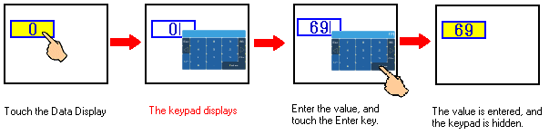
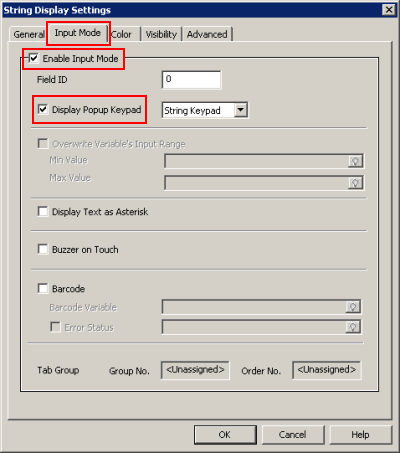
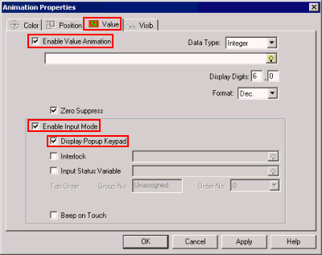
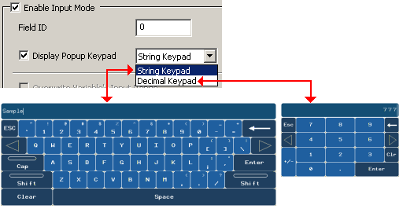

|
|
|
|
|
|
|
|
You can easily set up a popup keypad for a Data Display or Data Animation.

To do this, create a String display using either the Data Display tool or the Text drawing tool in the Graphical Objects toolbar. Select Enable Input Mode to enter numeric or string values. The Display Popup Keypad check box is selected by default when Enable Input Mode is selected.
In the Numeric Display Settings or String Display Settings dialog box:

In the Animation Properties dialog box:


If three popup windows are displaying and a fourth popup keypad is triggered, the most recently opened popup window will close to allow the popup keypad to open. This rule does not apply for custom popup keypads, as the custom popup keypad would be ignored.
When you use String Display, you can select String Keypad or Decimal Keypad.

If you want to restrict the values that you can enter from the keypad/keyboard, in the variable properties enable the Input Range property and define the Min/Max values.
If you want to use a custom popup keypad, see Section 11.9.5, Using Custom Keypads.